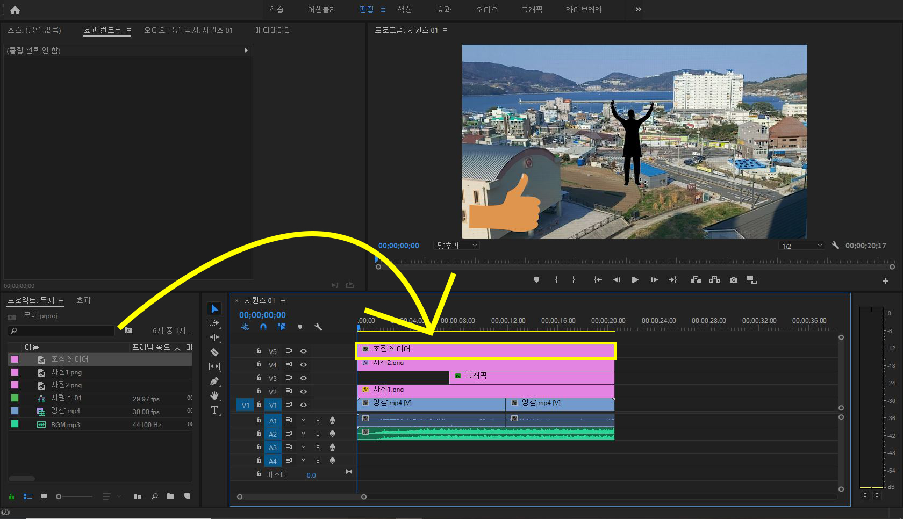
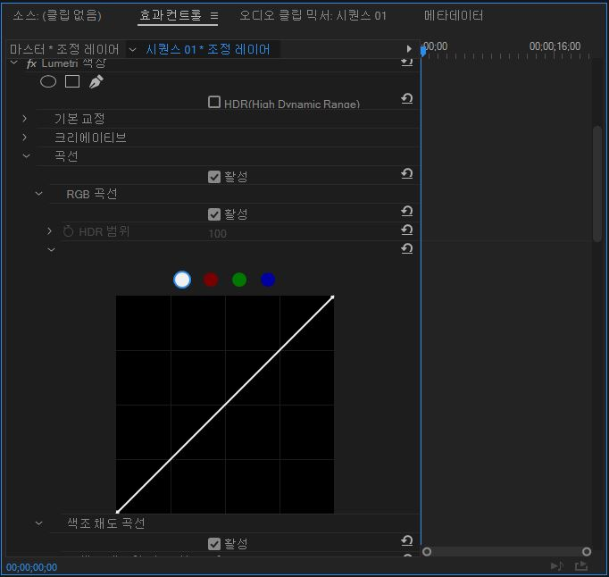

색보정
이번에는 영상 색보정하는 방법을 알아보겠습니다.

색보정은 효과 창을 이용해서 적용합니다.
('효과 창 이용하기'에서 넣었던 가우시안 흐림은
색보정 효과를 위해 제거하였습니다.)
먼저 프로젝트 창 우측 하단에 있는 저 아이콘을 클릭해줍니다.

그 다음 4번째에 있는 '조정 레이어'를 클릭해줍니다.

여기서 '확인'을 눌러주면

이렇게 프로젝트 창에 조정 레이어가 생기게 됩니다.

이제 조정 레이어를 마우스로 끌어다 시퀀스에 올려놓고,
영상 길이만큼 늘려줍니다.
그 다음 효과 창 검색 칸에 'Lumetri 색상'이라고 검색해줍니다.

이제 Lumetri 색상을 끌어다 조정 레이어에 넣어줍니다.

그러면 효과 컨트롤에 'Lumetri 색상'이라는 칸이 생기게 됩니다.

그 중 '곡선'이라는 곳에 들어가줍니다.

그러면 밑에 알 수 없는 것들이 많이 나타나는 데요.
간단하게 맨 위 대각선만을 이용해서 색보정을 해봅시다.

저 대각선 위 아래로 움직이다 보면
영상의 색상을 밝게 하거나 어둡게 할 수 있습니다.
이렇게 색보정을 이용하면 영상의 톤을 환하게 하여
더욱 멋진 영상을 만들 수 있습니다.
다음은 '영상 내보내기'입니다.